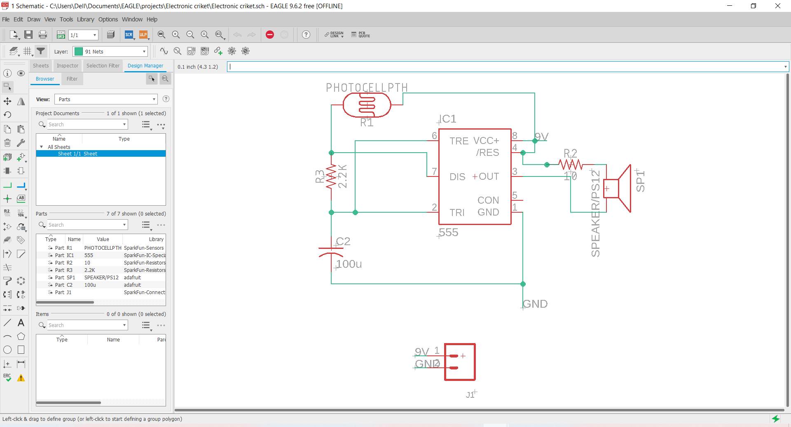
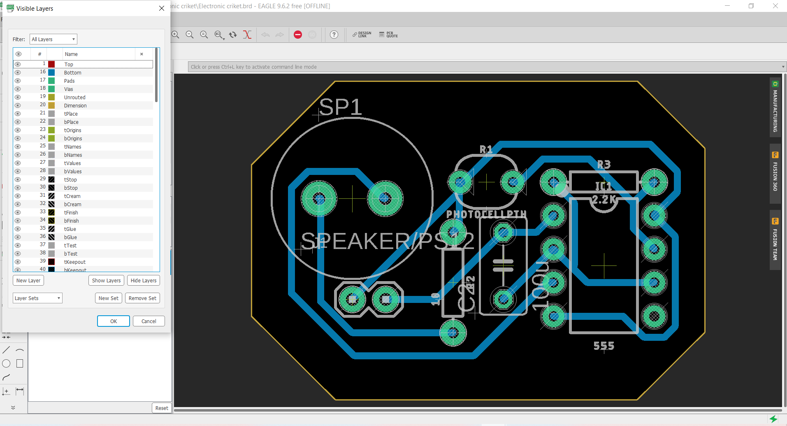
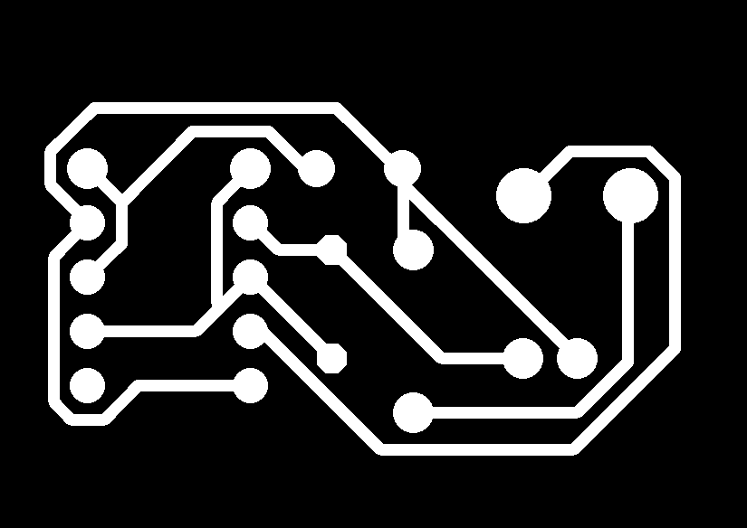
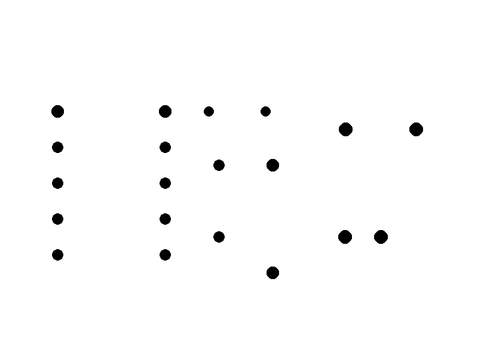
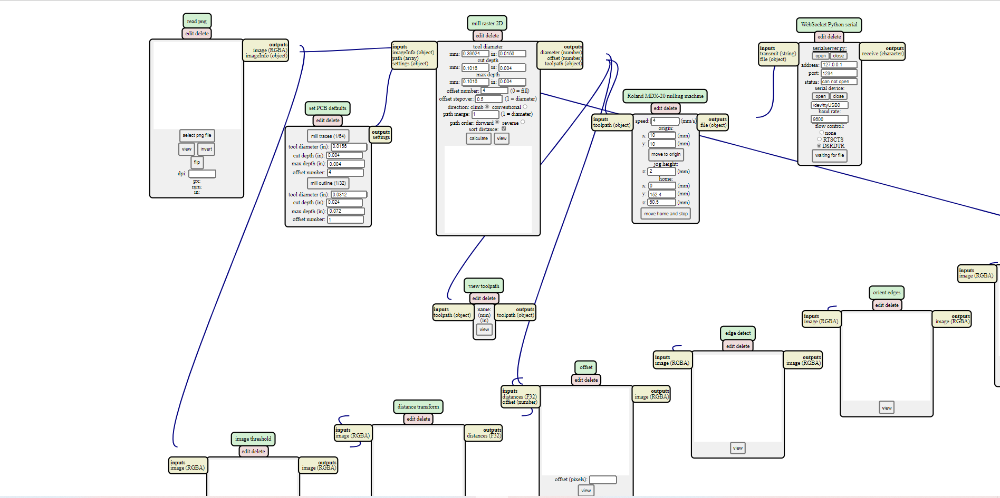
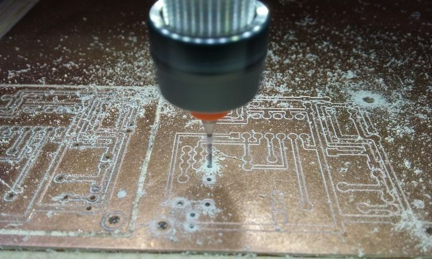

Step 1:Choosing circuit
I choosed this super easy circuit, check the following link to get more

Step 2:Schematic design
I use Eagle to design pcbs, so first i designed the Schematic of the circuit by adding parts and connectin them as shown in the circuit diagram
Step 3:layout design
layout desiegn requires to connect all airwires without any intersections, so it i choosed from layers buttom layer then i connected all airwires
remember to check DRC& ERC to make sure that your design is able to be printed on cnc, NOTE:you can choose Autorouter to improve you routing, also remeber to minimize the size of dimentions as possible as you can.

Step 4:exporting layout images
as shown in the photo from files choose export then image, before that you should have hidden all layers and showed only buttom, frame and drills
Note that we hide the acutal drilles when we export traces image, then we show drilles only to export drills and finally we only show frame to export the frame.

Step 5:Editing exported images
view the exported images on paint then flap them horizontally and eidit on thier colors just because the machine deticts the difference between white and black so make it easier to the machine.
 Step 6: Geber files
There's an open source module to import gerber files, so Gerber files are open ASCII vector format files that contain information on each physical board layer of your PCB design
click right=> choose programs=> open server program=> chooseSRM-20 then pcb png.


it will lead you to the following module
selsct your images traces, drills and frame one by one and do these setteings to the module. for traces: for drills: for frame:
Step 7:CNC Router
first change the mill v-shaped to a suitable size, between 6 mills to 10 mills
note that you have to put a sacrificial material, wood for example.
